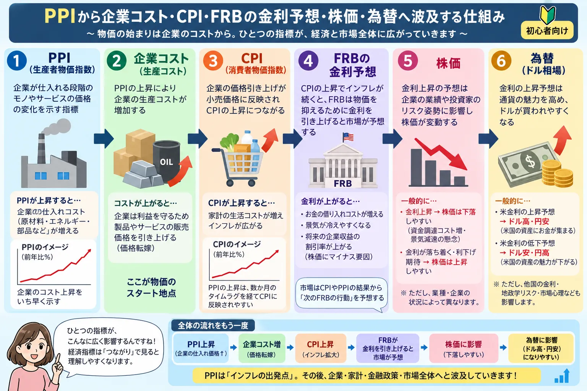

話題・トレンド
PPIとは？生産者物価指数とCPIの違い、株価・金利が注目する理由を初心者向けに解説
米国の経済ニュースでは「PPIが市場予想を上回った」「PPIを受けて米国債利回りが上昇した」といった表現がよく登場します。 PPIは企業側の価格変化を見る重要な物価指標で、CPIやPCEデフレーターと合わせて米国のインフレ動向を考える材料になります。
Introduction
PPIは「企業側から見た物価」を確認する指標

PPIはProducer Price Indexの略で、日本語では一般に 生産者物価指数と呼ばれます。
米国では労働省労働統計局（BLS）が公表しており、 国内の生産者が商品・サービス・建設などを販売するときに 受け取る価格がどのように変化したかを測定します。
初心者向けには、 「CPIが消費者側の物価なら、PPIは企業・生産者側から見た価格の動き」 と考えると理解しやすくなります。
Producer Price Index
PPIとは？生産者物価指数の基本
PPIは、企業が販売する段階での価格変化を幅広く調べる物価指標です。
商品
エネルギー、食品、機械、化学製品など、企業が販売するさまざまな商品の価格変化が対象になります。
サービス
輸送、金融、卸売・小売など、サービス分野の価格やマージンも最終需要PPIに含まれます。
建設
最終需要には建設に関する価格変化も含まれ、商品価格だけを見る指数ではありません。
米国PPIには「最終需要」と「中間需要」という考え方があります。 最終需要は個人消費、企業の設備投資、政府、輸出など最終的な需要先へ販売される商品・サービスなどを対象とします。
一方、中間需要は、企業が生産活動のために購入する原材料やサービスなど、 生産工程の途中で利用されるものの価格変化を見るために使われます。
PPI vs CPI
PPIとCPIの違いは？
どちらも物価に関する指標ですが、「誰の立場から価格を見るか」が異なります。
| 項目 | PPI | CPI |
|---|---|---|
| 正式名称 | Producer Price Index | Consumer Price Index |
| 日本語 | 生産者物価指数 | 消費者物価指数 |
| 主な視点 | 生産者・販売者が受け取る価格 | 消費者が支払う価格 |
| 市場での注目点 | 企業コスト・価格転嫁・インフレ圧力 | 家計が直面する物価・金融政策 |
| 米国の公表機関 | BLS | BLS |
例えば原材料価格や物流費が上昇すると、企業の販売価格が上がりPPIへ表れることがあります。 その後、企業が値上げを行えば消費者が支払う価格にも影響し、CPIへ波及する可能性があります。
重要： PPIが上がったからといって、同じ幅でCPIが上がるわけではありません。 企業が利益を削ってコストを吸収する場合や、需要が弱く値上げできない場合もあります。
CPIについて詳しく知りたい場合は、 「CPI（消費者物価指数）とは？」 もあわせて確認すると理解しやすくなります。
Leading Indicator
PPIはCPIの先行指標なの？
PPIは企業の生産・販売段階に近い価格を捉えるため、 CPIより先に物価圧力の変化が表れる可能性がある指標 として市場で注目されることがあります。
例えば、原材料価格や輸送費が上昇し企業の仕入れ・販売価格が上がれば、 後から消費者向け商品の値上げにつながる可能性があります。
波及するケース
企業が価格転嫁する
コスト上昇分を販売価格へ転嫁すれば、消費者価格の上昇につながる可能性があります。
波及しないケース
企業がコストを吸収する
値上げできず企業利益が圧迫される場合、PPIが上昇してもCPIへの影響が限定的になることがあります。
そのため、 「PPIが上がった＝次のCPIも必ず上がる」 と単純に判断するのは避ける必要があります。
Headline and Core
総合PPIとコアPPIとは？食品・エネルギーを除く理由
PPIのニュースでは「総合PPI」だけでなく、 変動の大きな項目などを除いた指数が注目されることがあります。
食品やエネルギー価格は天候、原油価格、地政学リスクなどの影響で短期間に大きく動くことがあります。 そのため市場では、それらを除いて価格上昇の基調を見ることがあります。
総合PPI
食品・エネルギーなどを含む最終需要全体の価格変化です。
食品・エネルギー除く系列
短期的に変動しやすい食品・エネルギーを除いて物価の基調を見るために使われます。
食品・エネルギー・トレードサービス除く系列
BLSが公表する重要な系列の一つで、トレードサービスまで除いて価格動向を確認できます。
「コアPPI」という言葉はニュース媒体によって指している系列が異なる場合があります。 数字を見る際は何を除いたPPIなのかまで確認することが大切です。
PPI vs PCE
PPIとPCEデフレーターの違いは？
| 指標 | 主な役割 | 主な視点 |
|---|---|---|
| PPI | 生産・販売段階の価格変化 | 生産者・販売者 |
| CPI | 消費者が購入する物価の変化 | 家計・消費者 |
| PCE | 個人消費に関する物価変化 | 消費支出全体 |
PPIは企業側の価格、CPIやPCEは消費者側に近い価格を見る指標です。 そのためPPIは、消費者物価へ波及する前の企業側の価格圧力を確認する材料として使われます。
一方、米国の金融政策を考えるうえではPCEデフレーターも非常に重要です。 FRBのインフレ目標を理解する場合は、 「PCEデフレーターとは？」 も確認しておきましょう。
Market Impact
なぜPPIで株価や金利が動くの？
PPIが金融市場で注目される最大の理由の一つは、 米国のインフレ見通しやFRBの金融政策予想へ影響する可能性があるため です。
PPIが市場予想より強かった場合
市場予想を上回るPPIが発表されると、 「インフレが思ったより強いのではないか」と受け止められる場合があります。
金利
利下げ期待が後退することがある
インフレ圧力が強いと判断されれば、FRBが金利を高く維持するとの見方につながる場合があります。
債券
米国債利回りが上昇することがある
金利見通しが上方修正されると債券価格が下がり、利回りが上昇する場合があります。
株価
高金利が株価の重荷になることがある
金利上昇によって企業の資金調達コストや株式の割高感が意識され、株価が下落する場合があります。
金利と株価の関係については 「金利上昇とは？」、 国債価格と利回りについては 「国債とは？」 もあわせて確認すると理解しやすくなります。
Lower PPI
PPIが低いと株価にはプラスなの？
PPIが市場予想より低ければ、 「企業側の物価上昇圧力が弱まっている」と受け止められ、 利下げ期待や金利低下につながることがあります。
その場合、株式市場にはプラス材料として受け止められる可能性があります。 しかし、PPI低下の背景が重要です。
好意的な解釈
インフレ鈍化
物価が落ち着きながら景気が維持されていれば、金融緩和への期待につながる場合があります。
警戒される解釈
需要低迷・景気減速
需要そのものが弱く企業が値上げできない場合、景気悪化への警戒が強まることがあります。
PPI低下＝必ず株高ではありません。 「なぜPPIが下がったのか」を確認することが重要です。
Market Expectations
PPIは数字そのものより「市場予想との差」が重要
経済指標で株価や為替が大きく動く理由を理解するときは、 発表された数字だけでなく市場が事前に何を予想していたかを見る必要があります。
予想より高い
インフレ圧力が想定以上と判断され、金利上昇方向へ反応する場合があります。
予想通り
すでに市場へ織り込まれていれば、反応が限定的になることがあります。
予想より低い
インフレ鈍化や利下げ期待につながる場合がありますが、景気減速への警戒が出ることもあります。
そのため「PPIが前年比で高かったのに株価が上がった」といった動きも珍しくありません。 市場では予想との差、前月からの変化、内訳、他の経済指標をまとめて評価しています。
Corporate Earnings
PPIと企業業績にはどんな関係がある？
PPIは金融政策だけでなく、 企業の売上高・原価・利益率を考える材料にもなります。
価格転嫁できる企業
利益を守れる可能性
コスト増加分を販売価格へ転嫁できれば、売上高の増加や利益率の維持につながる場合があります。
価格転嫁しにくい企業
利益率が圧迫される可能性
競争が激しい業界などでは値上げが難しく、原材料・物流費上昇が企業利益を圧迫する場合があります。
PPIの上昇はすべての企業に同じ影響を与えるわけではありません。 業種、価格決定力、原材料構成、為替、契約形態などによって影響は異なります。
USD / JPY
なぜ米国PPIでドル円や日本株まで動くの？
米国PPIによってFRBの金融政策予想が変わると、 米国債利回りや日米金利差への見方も変化します。 そのためドル円が動くことがあります。
例えば米国の物価圧力が強く、金利が高く維持されるとの見方が強まれば、 他の条件が同じならドルが買われやすくなる場合があります。
ただし為替は、日銀の金融政策、日本の金利、景気、株式市場、地政学リスクなど 多くの材料で動くため、PPIだけでドル円の方向が決まるわけではありません。
円安については 「円安とは？」、 FRBの金融政策については 「FOMCとは？」 も参考になります。
ドル円が動けば、日本の輸出企業・輸入企業の業績見通しや、 海外投資家から見た日本株の評価にも影響する可能性があります。 そのため米国PPIは日本市場でも注目されます。
How to Read
PPIニュースを見るとき初心者が確認したいポイント
-
前月比を確認する
直近1か月で価格上昇の勢いが強くなったのか、弱くなったのかを確認します。 -
前年比を確認する
1年前と比較して、生産者価格がどの程度変化しているかを確認します。 -
市場予想との差を見る
金融市場では数字の絶対値だけでなく、事前予想からの上振れ・下振れが重要になります。 -
総合と除外系列を分けて見る
エネルギーなど一部項目だけが大きく動いている可能性があるため、内訳も確認します。 -
CPI・PCEと合わせて見る
PPI単独ではなく、消費者側の物価指標と組み合わせることでインフレの全体像を捉えやすくなります。 -
金利・債券・為替の反応を見る
発表直後に市場がどのような金融政策を織り込み始めたかを確認します。
Latest Data
最新の米国PPIはどうなっている？
2026年9月7日時点で最新公表分は、2026年7月のPPIです。
最終需要PPI・前月比
0.0％
2026年7月。季節調整済み。前月から横ばいとなりました。
最終需要PPI・前年比
+4.7％
2026年7月までの12か月。季節調整前の前年比です。
食品・エネルギー・トレードサービス除く
前月比 +0.4％
同系列の前年比は+4.7％でした。
BLSによると、2026年7月は最終需要サービスが前月比0.2％上昇した一方、 最終需要財は0.7％低下しました。 財ではエネルギー価格の低下が目立っています。
次回発表： 2026年8月分PPIは、米国東部時間2026年9月10日午前8時30分に公表予定です。 そのため、2026年9月7日時点では8月分の数値はまだ公表されていません。
最新値は毎月更新されるため、実際にニュースを見る際は BLSの公式発表で最新データを確認してください。
Example
PPI発表後のニュースをどう読めばいい？
STEP 1
PPIが予想より強い？弱い？
- 前月比
- 前年比
- 除外系列
- 市場予想との差
STEP 2
金利予想が変わった？
- 利下げ期待
- 利上げ警戒
- 米国債利回り
- FRB見通し
STEP 3
株価・為替の反応を確認
- 米国株
- 米国債
- ドル円
- 日本株
経済指標を「数字が高いから株安」「低いから株高」と暗記するより、 PPI → インフレ予想 → 金利予想 → 債券 → 株価・為替 という流れを理解しておくと、今後のニュースにも応用できます。
Related Articles
あわせて読みたい関連記事
FAQ
PPIについてよくある質問
-
PPIとは何ですか？
PPIはProducer Price Indexの略で、日本語では生産者物価指数と呼ばれます。 米国ではBLSが、国内の生産者が商品・サービス・建設などを販売するときに受け取る価格の変化を測定しています。 -
PPIとCPIの違いは何ですか？
PPIは主に生産者・販売者側から見た価格変化、CPIは消費者が支払う価格変化を見る指標です。 対象や計算方法が異なるため、必ず同じ方向や同じ幅で動くわけではありません。 -
PPIはCPIの先行指標ですか？
生産・販売段階の価格変化が後から消費者価格へ波及する場合があるため、先行材料として注目されることがあります。 ただし企業がコストを吸収する場合もあるため、PPI上昇が必ずCPI上昇につながるわけではありません。 -
コアPPIとは何ですか？
価格変動の基調を見るため、変動が大きい項目などを除いたPPI系列を指すことがあります。 BLSでは食品・エネルギー・トレードサービスを除く最終需要など、複数の除外系列を公表しています。 -
PPIが高いと株価は下がりますか？
必ず下がるわけではありません。 市場予想を上回るPPIがインフレや高金利の長期化を意識させると株価の重荷になる場合がありますが、 景気、企業業績、市場予想、すでに織り込まれていた材料などによって反応は異なります。 -
PPIが低いと株価は上がりますか？
必ず上がるわけではありません。 インフレ鈍化や利下げ期待につながる場合がある一方、 PPI低下が需要低迷や景気悪化を示していると判断される場合もあります。 -
PPIでドル円が動くのはなぜですか？
PPIによって米国のインフレ見通しやFRBの政策金利予想が変化すると、 米国債利回りや日米金利差への見方が変わり、ドル円が動く場合があるためです。 -
PPIを見るときに初心者が確認するポイントは？
前月比・前年比、市場予想との差、食品・エネルギーなどを除いた系列、内訳、 CPIやPCEとの関係、発表後の金利・債券・株価・為替の反応をまとめて確認すると理解しやすくなります。
Official Sources
主な公的情報源
- U.S. Bureau of Labor Statistics｜Producer Price Index
- U.S. Bureau of Labor Statistics｜Producer Price Index News Release
- U.S. Bureau of Labor Statistics｜PPI Release Schedule
- Federal Reserve｜Statement on Longer-Run Goals and Monetary Policy Strategy
本記事内の2026年7月PPIおよび次回発表予定日は、 2026年9月7日時点の米国BLS公表情報をもとにしています。 経済指標は改定される場合があるため、最新情報は公式発表をご確認ください。
Summary
まとめ｜PPIは企業側の物価から金利・株価を考える重要指標
POINT 01
PPIは生産者側の価格を見る
- 企業が受け取る価格の変化
- 商品だけでなくサービスも対象
- 企業コストや価格転嫁の材料
POINT 02
CPIとは役割が違う
- PPIは生産者側
- CPIは消費者側
- PCEも合わせて確認
POINT 03
市場予想との差を見る
- インフレ予想
- FRBの金利予想
- 米国債・株価・ドル円
PPIは単なる「企業の物価指数」ではなく、 企業コスト → 消費者物価 → FRBの金融政策 → 金利 → 株価・為替 という流れを考える入口になります。
ただし一つの経済指標だけで市場の方向を断定することはできません。 CPI、PCE、雇用、景気、企業業績など複数の材料と組み合わせて確認することが大切です。
一般ユーザー目線の体験でおすすめの会社をご紹介

ご利用にあたっての注意事項
本記事は情報提供および金融教育を目的としており、特定の金融商品や銘柄の購入・売却を推奨するものではありません。 株式・投資信託・外国証券等の取引には元本割れを含む損失が生じる可能性があります。 経済指標や金融市場の反応はさまざまな要因によって変化するため、 最新の公式情報を確認したうえで、ご自身の判断と責任で行動してください。